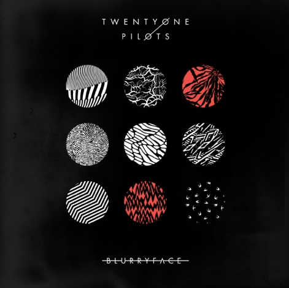

Album Reviews
Blurryface

The album jumps between hip-hop, rock, pop, and even reggae as if genre boundaries don’t exist. Tyler Joseph alternates between rapping, singing, and screaming like they’re all the same, and he even alludes to the idea on the curtain-opening ‘Heavydirtysoul’ when he states “this is not rap, this is not hip-hop / just another attempt to make the voices stop.” Despite the music’s schizophrenic nature, it’s all true to the Blurryface persona – and in that sense, it’s artistic. This album transcends the realm of music to become a cathartic vessel for Tyler Jospeh – and on a larger scale, anyone who immerses themselves in the experience. After all, everyone has a Blurryface alter ego.
Outside of its musical and thematic creativity, Blurryface is also chockfull with lyrics that are actually crucial to the album’s vitality. When you have a work that relies on emotional proximity, what is written on paper is equally as important as the notes being played. That’s where Twenty One Pilots absolutely hit the nail on the head; everything here is expressed perfectly for the given situation.
Once everything is taken into consideration, it’s safe to say that Twenty One Pilots have officially crafted their breakthrough record. Although they may not have invented the concept of fusing rock and hip-hop, it’s a refreshing change of pace for a mainstream environment that isn’t accustomed to such eclecticism. Plus, they wisely inject that formula with intermittent doses of other far less common genres (see: reggae) to keep things looking to the future and not back to the dreaded nu-metal days. Over all else though, Blurryface thrives on the intangibles. Despite being an emotional wreck, Tyler Joseph is precise in detailing feelings of insecurity that others would never even venture to describe. The emotional component is so large that it separates listeners into two camps: those who can relate to what he’s saying and can gain something from it, and those who will dismiss the whole thing as a pedestrian exercise in rap-rock. That makes Blurryface one of the more intriguing albums of the year, because emotion isn't really a quantifiable trait. In this case, it's best to simply listen and find out which side of the fence you're on.
New Music
Real Estate Announce New Album In Mind, Share Video for New Song “Darling”: Watch

Real Estate have announced a new album, In Mind—the follow-up to their 2014 LP Atlas. It’s out March 17 via Domino. They have also shared the first song from the record, as well as its accompanying music video. The “Darling” video (directed by Weird Days) features the band performing casually next to a horse. Watch it below.
Real Estate recorded In Mind in Los Angeles with producer Cole M.G.N. (who’s worked with Beck, Julia Holter, and more). It is the band’s first full-length since the departure of founding member and guitarist Matt Mondanile, who left last May citing a desire to focus on his own Ducktails project. The album features their new member, guitarist Julian Lynch.
Darling-Official Video

Other Blogs
Indie Bullhorn
Pitchfork
Moop City